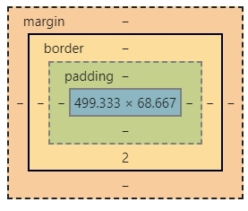

CSS
Cascading Style Sheets (CSS) is a style sheet language used for describing the presentation of a document written in a markup language like HTML. CSS is a cornerstone technology of the World Wide Web, alongside HTML and JavaScript.
스터디 사이트: 생활코딩 https://opentutorials.org/course/3086
- CSS가 등장하기 이전 -
Font Tag: <font> </font>
- 디자인을 위한 Tag, 지금은 사용안함. 예시: <font color="red"> </font>
- CSS를 사용 -
* <!-- , --> 안에 내용은 무시하도록 처리
Style Tag: <style> </style>
- 디자인을 정의하기 위한 새로운 언어(CSS), style tag를 통해서 정의하거나 HTML style 속성으로 처리할 수 있음.
Tag 예시
<style>
a {
color:red;
}
</style>
속성 예시
<a href="1.html" style="color:red">
- 중복된 코드를 제거 -
선택자(Selctors)를 사용ID 선택자 Tag에 id="id" 입력 - CSS에서 #id { }로 정의
Class 선택자 Tag에 class="class" 입력 - CSS에서 .class { }로 정의
Tag 선택자 CSS에서 a { }로 정의
{ } = 선택자내에 효과를 정의, ;=구분자
- Box Model -
Block Level Elemnet = 화면을 모두 차지함
Inline Elemnent = 자신의 크기 만큼만 자치함
Display 속성을 이용하여 변경 가능, 예시 style="display:Inline"
CSS 내에서는 /* */ 안의 내용은 무시(Style Tag내)
여러개의 선택자를 콤마(,)를 사용하여 중복에 대한 코드를 줄일 수 있음
CSS Border: Contant의 테두리
웹페이지에서 마우스 오른쪽 버튼을 눌러 검사 기능을 실행하여 확인가능

Grid : 화면을 분할하여 표시
disply:grid; grid-tmeplate-columns:150px 1fr;
Div Tag: <div> </div>
Groping하는 Tag (Block Element)
Groping하는 Tag (Inline Element)
특정코드 사용가능 여부 확인하기 - Caniuse
Media Query: 반응형 디자인
예시: @media(max-width:800px){ }
CSS파일 별도 생성
style tag의 내용을 CSS파일을 별도로 저장하여 중복 제거
각 페이지에 Style Tag 대신 <link rel="stylesheet" href="style.css"> 입력